Overview
Purpose
My family and I love to travel for weeks at a time. Our favorite ways to spend time in nature is to explore the national parks. They are an endless source of beauty. No park is the same. Each has it’s own story of how it formed and how it came to be protected in the national park system. Visitors to my site will be able to see beautiful nature pictures and learn about where they can go to see them in person as well as route ideas from our travel blog for putting together a trip. Let's Travel!
Audience
Photographers, travelers, and nature enthusiasts, family, friends.
Branding
Website Logo
Style Guide
Color Palette
Palette URL: https://coolors.co/2c447b-dfdfd3-a7a282-45050c-132a13| Primary | Secondary | Accent 1 | Accent 2 | Accent 3 |
|---|---|---|---|---|
| #45050c | #dfdfd3 | #2c447b | #a7a283 | #132a13 |
Typography
Heading Font: Risque
Paragraph Font: Acme
Normal paragraph example
Gallery Paragraph: I love taking pictures while on adventures and I love sharing that beauty with others. Take a look around and hopefully you will be inspired to plan a trip of your own!
Colored paragraph example
Travel Blog Paragraph: We work hard and play hard. Of the 50 National Parks in the Contiguous United States, we have been to 37. Check out our travel blog to see how we pack in so much adventure. We have routes and highlights of the best things to see.
Navigation
Site Map
Content
Home page
Intro Quote: “I believe the best way to begin reconnecting humanity's heart, mind, and soul to nature is for us to share our individual stories.” J. Drew Lanham
Gallery Paragraph: I love taking pictures while on adventures and I love sharing that beauty with others. Take a look around and hopefully you will be inspired to plan a trip of your own!
Travel Blog Paragraph: We work hard and play hard. Of the 50 National Parks in the Contiguous United States, we have been to 37. Check out our travel blog to see how we pack in so much adventure. We have routes and highlights of the best things to see.
Images for the Home page
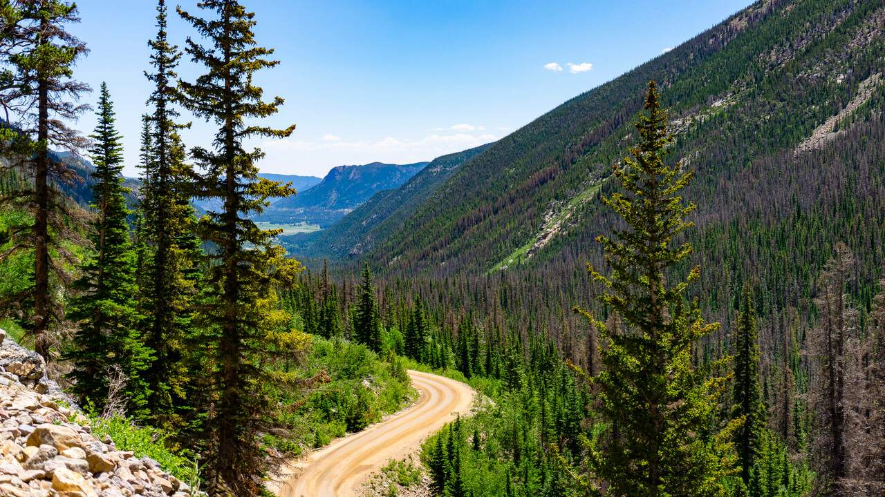 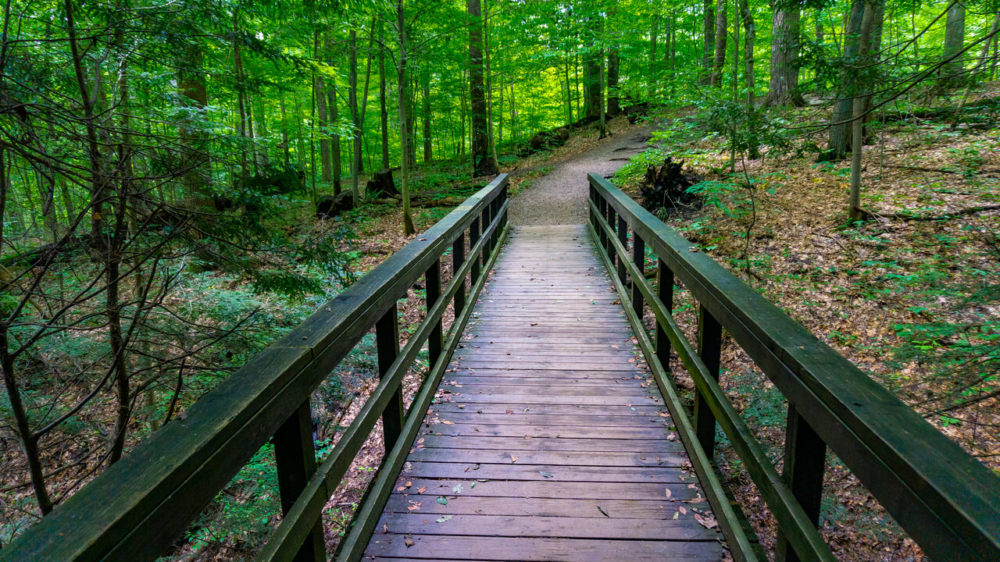 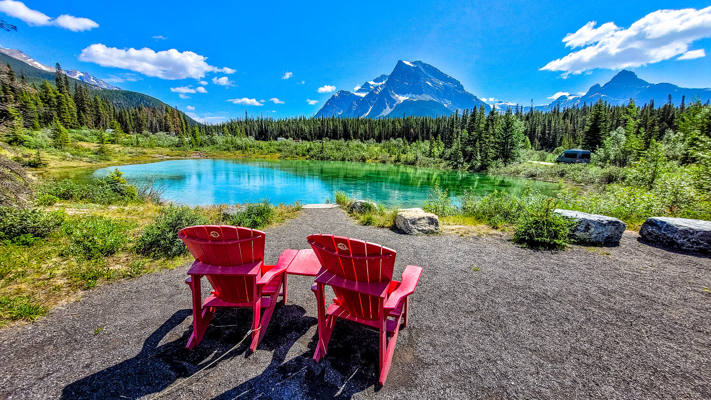 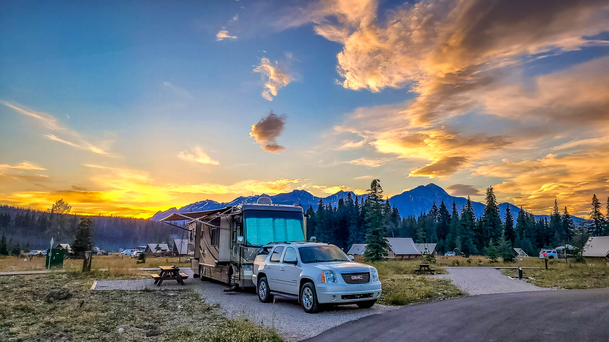Gallery
Inspirational Quotes on Nature:
Leave the road, take the trails. —Pythagoras
Adopt the pace of nature. Her secret is patience. —Ralph Waldo Emerson
The earth is what we all have in common. —Wendell Berry
In all things of nature there is something of the marvelous. —Aristotle
Looking at beauty in the world, is the first step of purifying the mind. —Amit Ray
I took a walk in the woods and came out taller than the trees. —Henry David Thoreau
Images for the Page 2
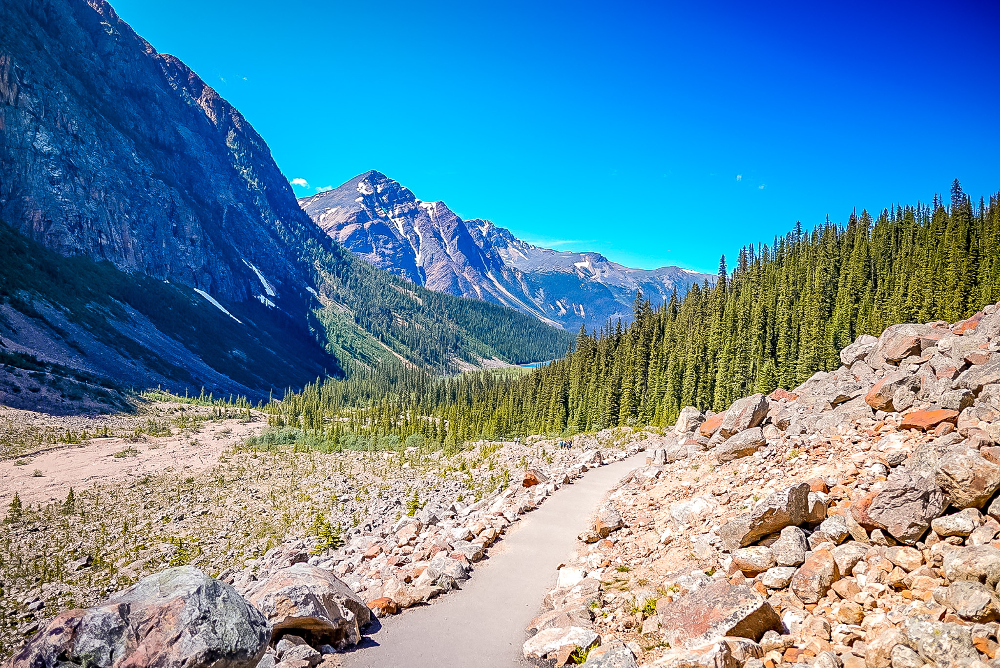 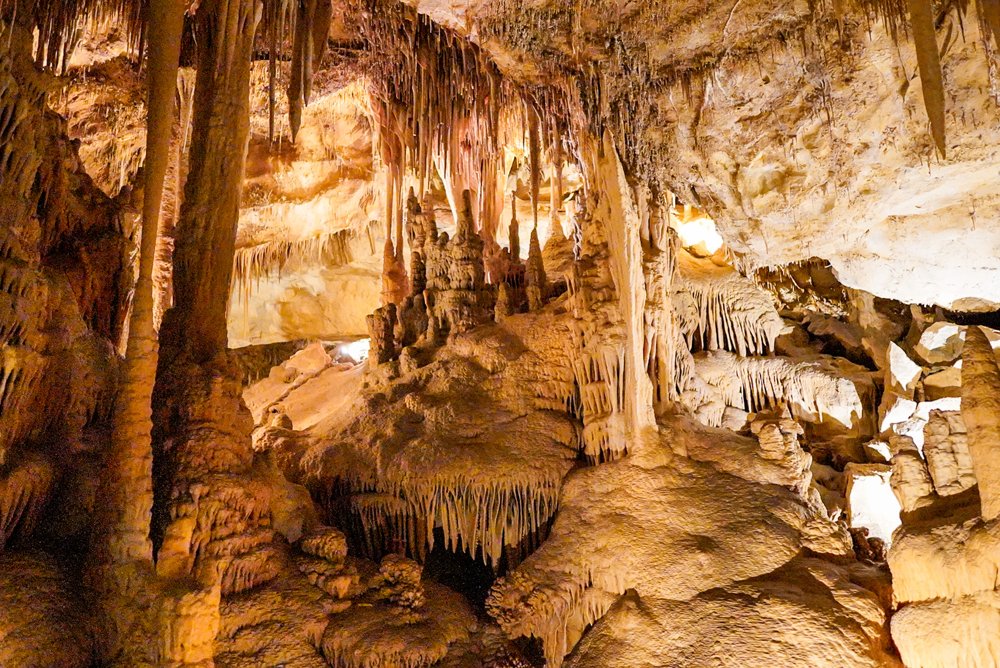 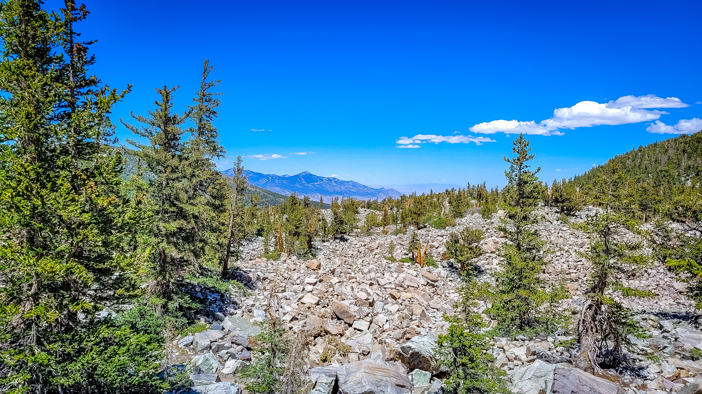 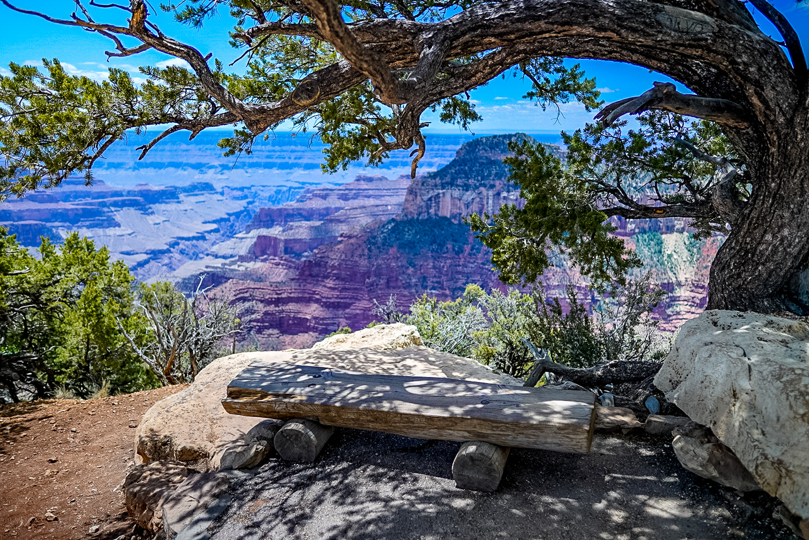Travel Blog
Rockies Trip Blog
Horseshoe Bend
The sight seeing began on Sunday with a visit to Glen Canyon Dam (no tours still because of COVID) and a hike out to Horseshoe Bend for a checklist must see. I have driven this road a million times and never seen the bend in the river. Managed to time it right for a sunset!
North Rim GC
We spent all of today exploring the North Rim of the Grand Canyon. I love this side!!! Because of the pines, this side has so much green to contrast the red and browns. Kids and hubby climbed as many rocks and hung over as many ledges as they could. We hiked, checked out overlooks, and ended up back at the RV exhausted, but satisfied.
Great Basin
We had a great time exploring the upper elevations of Great Basin National Park today. Lots of hiking, bristlecone pine trees (really really old trees), climbing rocks, mountain streams and lakes, even some snow. We really enjoyed it! I forgot my camera in the RV, so here are my phone pics
We started the last day out with a tour of Lehman Caves. Amazing! We have toured a lot of caves and this one ranked pretty high up there. Great tour guide, too. Did a little more hiking and then finally got a chance to try out some night photography. Heading out of Great Basin tomorrow and on to American Fork to see family.
East Glacier
East Glacier, 3 waterfalls trail from Sun Point. Such a beautiful and enjoyable day! We included a mandatory break in the RV mid-afternoon to take cover from the intense Sun. We were a little disappointed that we couldn't access Logan Pass yet and 2 of the amazing hikes up there were also unavailable. However, we explored what we could and really enjoyed it.
Many Glacier
We have not had great coverage or much spare time to go through and post photos, but we have been having an amazing time! Spent Tuesday at Many Glacier. We got off a little late and then found out the area filled up and was closed. We ate our picnic in the parking lot right by the gate and waited until they opened. Tom took a nap in the parking lot. It was worth the wait we had an enjoyable hike to some falls, had a contest who could keep their feet in the longest, walked all my needed steps and enjoyed each other. Great day!
GTSR
Yesterday we were getting ready to head to Banff when we learned that the Going to the Sun Road finally opened!!! This was the last day of our pass so we headed up the road instead. It was very much worth the delay!!! So beautiful . It took us most of the day with a break on the west side for lunch and ice cream. We then crossed the boarder (no problems!!), resupplied, and gave up on reaching Banff and just bedded down in Calgary at a Walmart. So much to be grateful for!!!
Banff
Yesterday we finished driving to and then spent time exploring Banff by touring Cave and Basin historic site (which is the origin of how the Canadian park system began) and walking the marsh lands around. Ben got to be part of the tour presentation, which was fun. After too much sun and way too many mosquito bites we took shelter in the RV for a few hours. After dinner we hiked Tunnel Mountain Summit trail and accidentally timed it just right to enjoy a sunset! After getting everyone showered and to bed I managed to score a nice shot of the clear night sky!
Yoho
Saturday we explored Yoho National Park. Beside the fact that it turned out to be the breeding ground for the world's population of mosquitos....we saw some incredible things. We hiked to a very fast flowing waterfall (with a rainbow at the edge), we played with a paddle board in a cold yet beautiful lake, and then we checked out "natural bridge" where the water flow wore a hole in the rock. Exhausting, but amazing day!!!
Kootney
Sunday we switched campsites and national parks. We spent the day exploring Kootney National Park. Starting with Marble Canyon, then Paint Pots, then Numa Falls and then we wound down the day in the hot springs. Ben was able to "enjoy" washing off in the cold river after an unfortunate encounter with a muddy slope. Of course we stood by and supported him by taking video and pictures while cheering him on Amazing day!! As we headed back into our camp ground we were treated with a heard of mountain goats just hanging out.
Icefields Parkway:
Monday we visited a suspension bridge before starting our drive up the Icefields Parkway. This road is amazing!!! We tried to just head to the Columbian Icefields, but saw too many beautiful things to stop and see. Eventually we got ourselves a camping spot at Waterfowl Lakes campground and decided the lake was so pretty we would fill all the paddle boards, put them in up river and then ride them down into the lake. It was a blast!!! Perfect weather, beautiful lake, fun group of people!!!! Ended the day with a sunset walk with the hubby. I love this beautiful earth God has given us!
Tuesday we finished driving the Icefields Parkway and made it to our campground in Jasper. We stopped at places like Peyto Lake (glacier and lake together ), Nystaya Falls, Columbian Icefields Skywalk, and Upper Waterfowl Lake. I also began the day with a solo hike to a lake near the campground. In this part of the world, lakes, falls, rivers, mountains, glaciers, and woods are plentiful. Our kids are beginning to be overloaded, but I could never get enough.
Jasper
We started out the day yesterday with a bear sighting!!! Super fun. Then we managed to visit two more falls and the Edith Cavell glacier today in the Jasper area. It's amazing to me to see so much water flowing everywhere! It's beautiful, yet contains so much power to affect things in it's path. Yummy dinner, ice cream, and card games finished out our evening.
We toured one last falls before packing up and leaving Jasper today. Maligne Canyon did not disappoint! Everyone agreed it was a crowning sight to end our national parks tour with. Plus, I was able to spend a few minutes last night getting some long exposure shots. Beautiful skies!
Images for the Page 3
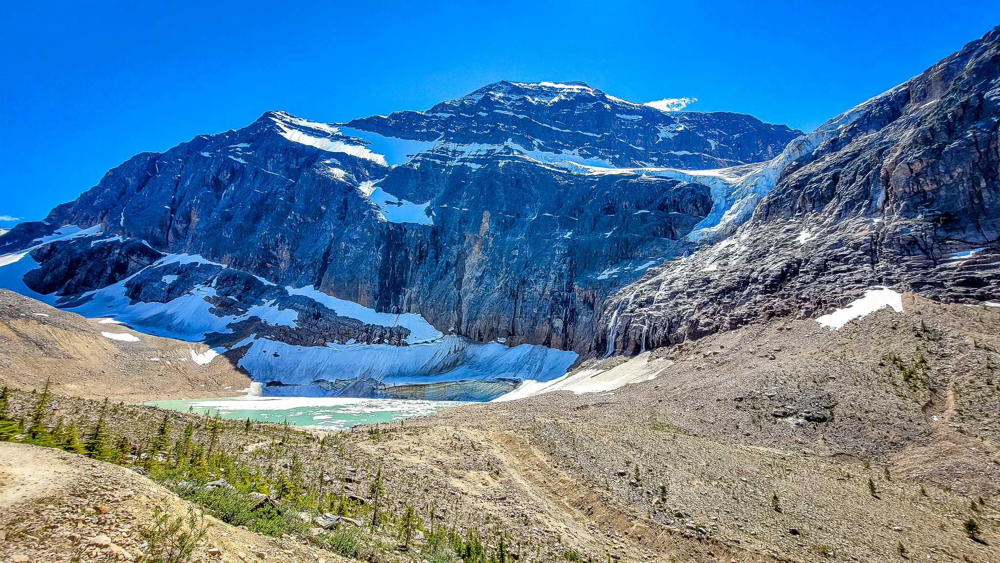 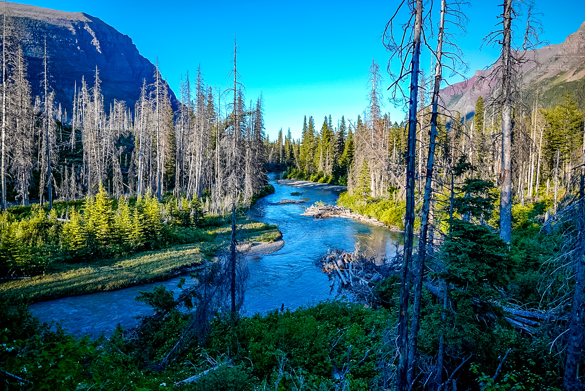 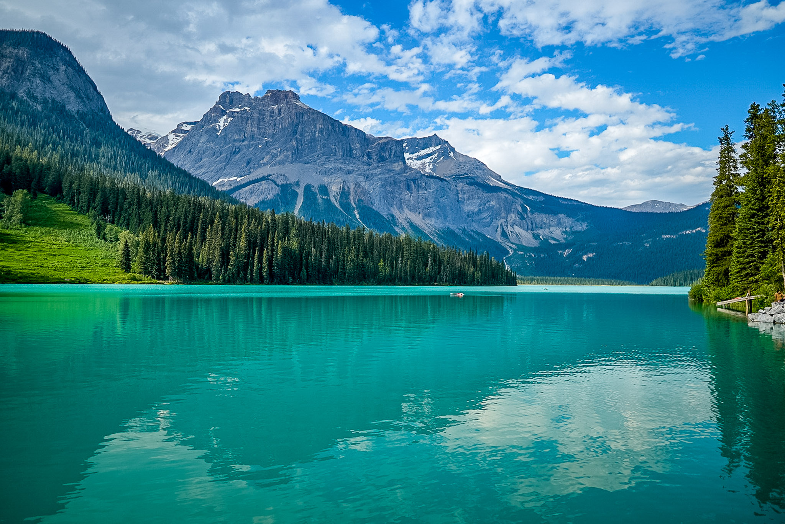 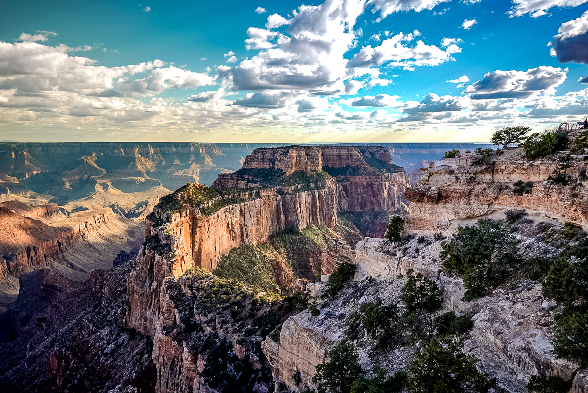 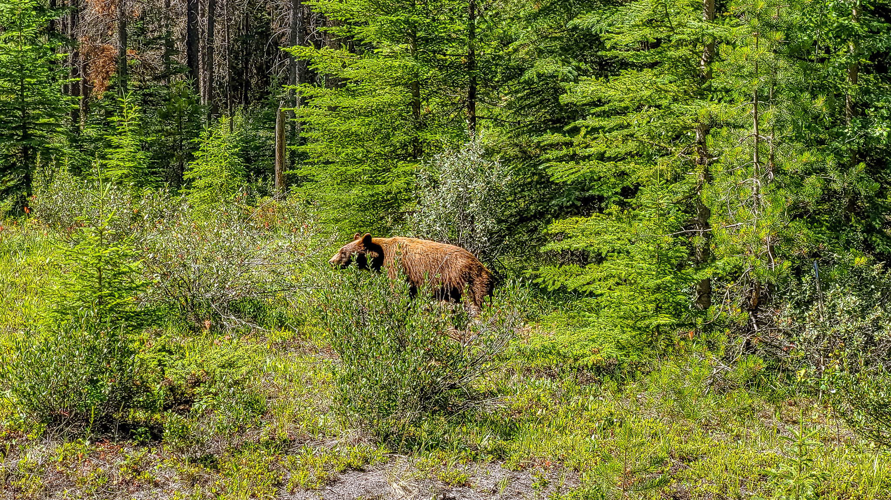Wireframes
Create three wireframes for your site. One for each page and list them here
Home
Main picture will be a slideshow that cycles through several pictures

Gallery
Clicking on pics will make them bigger for better viewing.

Travel Blog
Contains blog info from travels with most recent travels at the top.